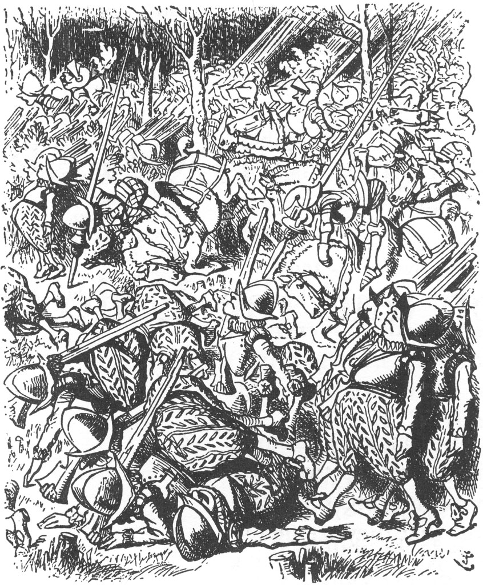
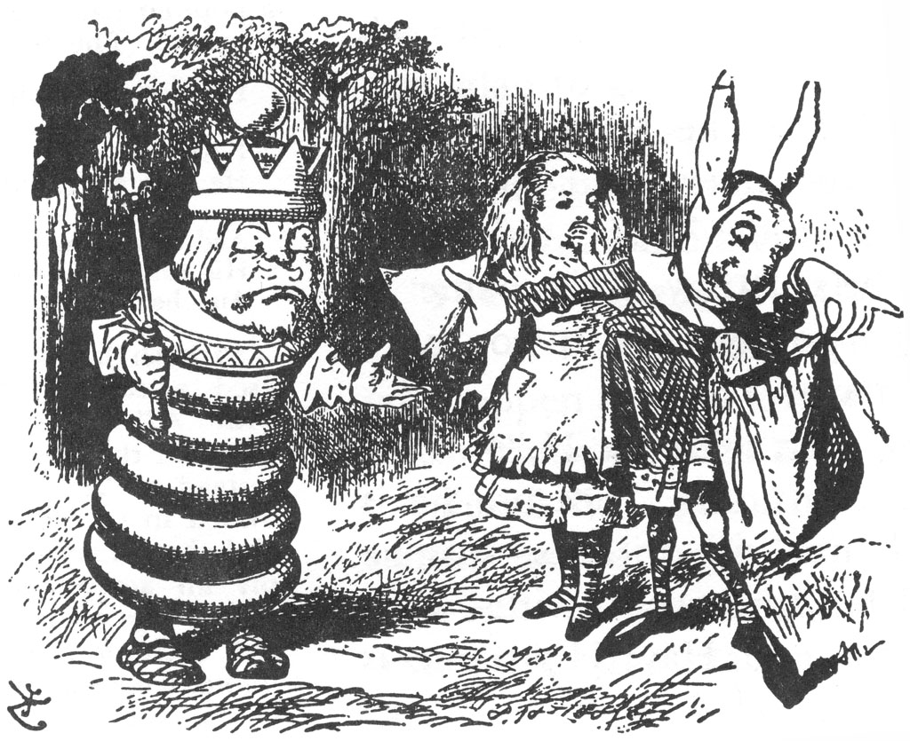

Derken korudan askerler gelmeye başladı, önce ikişer üçer, sonra onar yirmişer ve nihayet öyle kalabalık oldular ki, sanki bütün koruyu doldurmuşlardı. Alice ezilme korkusuyla bir ağacın arkasına saklandı ve onların gidişini seyretti.
Ayaklarından böyle bihaber askerlerle ömründe daha önce hiç karşılaşmadığını düşündü Alice; sürekli bir şeylere takılıp duruyorlardı ve ne zaman birisi düşecek olsa, ardından da birkaç tanesi onun üzerine yığılıp kalıyordu, böylece kısa süre içinde her taraf küçük insan tepecikleriyle dolup taştı.
Bunları atlar izledi. Dört ayakları olduğundan, piyadelerden daha başarılıydılar, ama onlar da yer yer tökezliyorlardı ve sanki genel bir kuralmışçasına ne zaman bir at tökezlese, anında binicisi de düşüyordu. Bu kargaşa her geçen dakika daha bir artıyordu. Alice ise bir düzlüğe çıkmış olmaktan pek hoşnuttu doğrusu; orada Beyaz Kral da yerde öylece oturmuş, not defterine bir şeyler yazıyordu.
“Hepsini ben gönderdim!” diye bağırdı Kral sevinç içinde Ali-ce’i görür görmez. “Korudan gelirken askerlerle karşılaştın mı, tatlım?”
“Evet,” dedi Alice, “galiba birkaç bin tane vardılar.”
“Tam tamına dört bin iki yüz yedi tane,” dedi Kral defterine bakarak. “Bütün atları göndermedim, biliyorsun ki iki tanesi oyunda gerekli. İki Ulak’ı da göndermedim. İkisi de şehre gittiler. Yola bir bakıver de, birinden birini gördüğünde söyle bana.”
“Yolda gördüğüm hiç kimse yok,” dedi Alice.
“Keşke benim de böyle gözlerim olsa,” dedi Kral huysuzca. “Hiç kimseyi görebilmek ha! Üstelik bu mesafeden! Vay canına, ben bu ışıkla ve bu mesafeden ancak gerçek insanları görebilirim.”

Bir eliyle gözlerine siper yaparak dikkatlice yola bakan Alice, bu arada Krahn sözlerini kaçırmıştı. “İşte şimdi birilerini görüyorum!” diye haykırdı sonunda. “Ama ne kadar da yavaş geliyor... hareketleri de ne tuhaf!” (çünkü Ulak kocaman ellerini her iki tarafa yelpaze gibi açmış, bir aşağı bir yukarı zıplayıp duruyor, yılan-balığı gibi kıvrıla kıvrıla geliyordu.)
“Hiç de değil,” dedi Kral. “O bir Anglo-Sakson Ulak’ı... bunlar da Anglo-Sakson davranışları. Sadece mutluyken böyle davranır, adı da Hart Havşanı.”
Bu isim Alice’e bir tekerlemeyi anımsatmıştı: “Severim sevgilimi H ile, çünkü o Hoşnut; nefret ederim sevgilimden H ile, çünkü o Hortlak; beslerim onu... onu Hardal lapası ve hasırotu ile. Adı da Hart Havşanı ve yaşar sevgilim...”
“Handa,” dedi Kral basit bir şekilde kendisinin de oyuna katıldığına dair en ufak bir fikri olmayarak, bu arada Alice H ile başlayan şehrin adını hatırlamak için biraz duraksamıştı. “Öteki Ulak’ın adı da Hapkacı. İki tane ulağımın olması gerekir hani... gidecek, gelecek. Biri gitmek için, öbürü gelmek için.”
“Af buyurun?” dedi Alice.
“Ben sana bir şey buyurmuyorum,” dedi Kral.
“Ben sadece ne dediğinizi anlamadığımı söylemek istemiştim,” dedi Alice. “Neden biri gitmek için, biri gelmek için?”
“Sana söylemedim mi?” dedi Kral sinirlenerek. “İki tane olmalı... Biri gidip getirecek, öbürü götürecek.”
Tam o sırada Ulak da yanlarına gelmişti. Sesi soluğu çıkamayacak kadar nefessiz kalmıştı, sadece ellerini sallıyor ve zavallı Kral’a bakıp suratını korkunç hallere sokuyordu.
“Bu küçük hanım seni H ile seviyormuş,” dedi Kral, Ulak’ın dikkatini kendisinden başka tarafa çekebilmek amacıyla onu Alice ile tanıştırarak... ama bunun hiçbir faydası yoktu... Anglo-Sakson davranışlar her geçen dakika daha bir tuhaf hal alıyor, o kocaman gözleri çıldırmışçasına sağa sola yuvarlanıyordu.
“Beni korkutuyorsun!” dedi Kral. “Bayılacak gibiyim... Bana biraz hardal lapası ver!”

Bunun üzerine Ulak, Alice'i hayretler içinde bırakacak şekilde boynuna asılı heybesini açtı ve Kral’a birazcık hardal lapası verdi, o da lapayı anında yuttu.
“Biraz daha!” dedi Kral.
“Hasırotundan başka bir şey kalmadı,” dedi Ulak çantasına göz gezdirerek.
“O zaman hasırotu,” diye baygın baygın mırıldandı Kral.
Alice, hasırotunun Kral’ı epeyi kendine getirmesinden çok mutlu olmuştu. “Tam bayılacakken hasırotu yemek gibisi yok,” dedi Alice’e, bir yandan da hapır hupur hasırotu götürürken.
“Bence, üzerine biraz soğuk su dökmek çok daha iyi olacak,” diye bir öneride bulundu Alice; “... Ya da birazcık amonyak ruhu.”
“Bundan daha iyisi yoktur, demedim,” diye karşılık verdi Kral. “Bunun gibisi yok dedim.” Alice, buna karşı gelmeye kalkışmadı.
“Yolda sen kimi geçtin?” diye devam etti Kral, birazcık daha hasırotu vermesi için elini Ulak’a doğru uzatırken.
“Hiç kimseyi,” dedi Ulak.
“Doğru,” dedi Kral; “bu küçük hanım da onu görmüş. O halde, tabii ki hiç kimse senden daha yavaş yürüyor.”
“Elimden gelenin en iyisini yaptım,” dedi Ulak küskün bir ses tonuyla. “Kimsenin benden daha hızlı koşamayacağından hiç kuşkum yok.”
“Daha hızlı koşamaz,” dedi Kral, “yoksa buraya senden önce varırdı. Neyse, şimdi soluklandığına göre, bize kentte neler olup bittiğini anlatabilirsin.”
“Kulağınıza fısıldayacağım,” dedi Ulak, elini boru şeklinde ağzına koyup, Kral’ın kulağına yaklaşmak için öne doğru eğilerek. Alice buna çok üzülmüştü, çünkü kendisi de haberi duymak istiyordu. Fakat Ulak, fısıldamak yerine, avazı çıktığınca bağırıyordu, ”Yine iş başındalar!”
“Sen buna fısıldama mı diyorsun!” diye bağırdı zavallı Kral zıplayıp silkinerek. “Bir daha böyle bir şey yaparsan, seni yağlatırım. Sarsıntıdan beynimi yerinden oynattın!”
“Çok hafif bir deprem olmalı,” diye düşündü Alice ve sonra “Kimler yine iş başında?” diye sormayı göze aldı.
“Kim olacak, Aslan ile Tekboynuz tabii ki,” dedi Kral.
“Taç için mi kavga ediyorlar?”
“Tabii ki,” dedi Kral,” işin tuhaf yanı da baştan sona taç aslında hep benim! “Hadi gidip onları görelim.” Böylece koşarak giderlerken Alice, eski bir şarkının sözlerini kendi kendine mırıldanıp duruyordu:
“Aslan ile Tekboynuz dövüşüyorlardı taç uğruna:
Aslan Tekboynuz’u dövdü kasabanın bir başından öbür başına.
Kimileri beyaz ekmek kimileri esmer ekmek verdi onlara; Kimileri de üzümlü kek, sonunda kovuldular kasabadan davullarla.
“Kazanan... tacı mı... alır?..” diye sordu, Alice güçbela, çünkü bu uzun koşu onu nefes nefese bırakmıştı.
“Aman Tanrım, hayır!” dedi Kral. “Bu nasıl fikir böyle!”
“Lütfen... bir iyilik edin de...” dedi Alice soluk soluğa, biraz daha koştuktan sonra, “bir dakika durun... sadece biraz nefeslen-mek için.”
“İyilik edecek kadar iyiyim de,” dedi Kral, “o kadar güçlü değilim. Görüyorsunuz işte, zaman öyle hızla ilerliyor ki. Bandırye’yi geçersin de, onu geçemezsin.”
Alice’in artık konuşacak nefesi kalmamıştı, böylece sessizlik içinde koşmaya devam ettiler, ta ki ortalarında Aslan ile Tekboy-nuz’un kavgaya tutuştuğu büyük bir kalabalık karşılarına çıkıncaya değin. Öyle bir toz duman içindeydi ki ortalık, Alice ilk başta neyin ne olduğunu seçemedi, ama kısa süre içinde Tekboynuz’u boynuzundan tanıdı.
Gidip diğer Ulak Hapkacı’nın yanında durdular. Hapkacı bir elinde bir fincan çay, diğer elinde bir parça tereyağlı ekmek ile durmuş dövüşü seyrediyordu.
“Daha yeni hapisten çıktı, hapse girdiğinde de daha çayını bitirmemişti,” diye fısıldadı Hart Havşanı Alice'in kulağına; “ve hapiste ona sadece istiridye kabuğu vermişler... İşte bu yüzden görüyorsun ya aç susuz kalmış. Nasılsın yavrucuğum?” diye devam etti, kolunu sevgiyle Hapkacı'nın boynuna dolayarak.
Hapkacı, etrafına bakınıp başını salladı ve tereyağlı ekmeğine devam etti.
“Hapiste mutlu muydun yavrucuğum?” dedi Hart Havşanı.
Hapkacı bir kez daha etrafına bakındı ve bu sefer yanaklarından aşağı bir iki damla gözyaşı süzüldü, ama ağzından tek bir söz çıkmadı.
“Konuşsana, yoksa konuşamıyor musun?” diye bağırdı Hart Havşanı sabırsızca. Ne var ki, Hapkacı hapır hupur yemeğe devam etti ve biraz daha çay içti.
“Konuş diyorum sana?” diye bağırdı Kral. “Dövüşleri nasıl gidiyor.”
Hapkacı, kocaman bir parça tereyağlı ekmeği zar zor ağzına bastırıp yuttu. “Çok iyi gidiyor,” diye cevap verdi boğula boğula: ”Her ikisi de seksen yedi kez yere düştüler.”
“O halde kısa süre içinde beyaz ekmek ile esmer ekmeği getirecekler?” diye sormaya kalkıştı Alice.
“Şu an ekmekler onları bekliyor,” dedi Hapkacı: “Şu yediğim onlardan bir parça.”
Tam o anda dövüşte bir duraklama oldu. Aslan ile Tekboynuz nefes nefese yere oturdukları sırada, Kral “Yemek için on dakika müsade!” diye bağırdı. Hart Havşanı ve Hapkacı beyaz ekmek ile esmer ekmek dolu yuvarlak tepsileri taşımaya başlayarak anında işe koyuldular. Alice, tadına bakmak için bir parça aldı, fakat çok kuruydu.
“Bugün bir daha dövüşeceklerini sanmıyorum,” dedi Kral, Hapkacı’ya; “gidip davullara başlamalarını buyur.” Hapkacı, çekirge gibi anında fırlayıp gitti.
Alice, öylece onu izleyerek bir iki dakika kalakaldı. Sonra birden yüzü ışıl ışıl oldu. “Bakın, Bakın!” diye bir yerleri işaret ederek bağırdı. “Beyaz Kraliçe koşarak kırdan geliyor! Şuradaki korudan uçarak çıktı... Şu Kraliçeler de ne kadar hızlı koşabiliyorlar böyle!” ”Kesinlikle arkasında düşmanlar var,” dedi Kral dönüp bir kez bile bakmadan. “Şu koru hep düşmanlarla dolu.”
“Ama koşup ona yardım etmeyecek misin,” diye sordu Alice, onun böyle sakin konuşmasına şaşırarak.
“Faydası olmaz, faydası olmaz!” dedi Kral. “Kraliçe, korkunç hızla koşar. Bir Bandırye’yi yakalarsın da onu yakalayamazsın! Ama istersen, onunla ilgili bir şeyler yazabilirim... Kraliçe sevimli iyi bir yaratıktır,” dedi usulca kendi kendine not defterini açtığı sırada. “Yaratığı ‘k’ ile mi yoksa ‘ğ’ ile mi yazıyorsun?”
Tam bu sırada, Tekboynuz elleri ceplerinde salına salına yanlarına geldi. Kral’ın yanından geçerken, ona şöyle bir bakıp, “Bu sefer ona gününü gösterdim,” dedi.
“Birazcık işte,” diye karşılık verdi Kral epey gergince. “Boynuzunu ona saplamaman gerekirdi, biliyorsun hani.”
“Acıtmadı ki,” dedi Tekboynuz umursamazca. Tam gidiyordu ki, gözü Alice’e takıldı; anında geri döndü ve bir süre çok derin bir tiksinti içinde ona baktı.
“Bu... Bu... Ne?” dedi sonunda.
“Bu bir çocuk!” diye atıldı Hart Havşanı onu tanıştırmak üzere, Alice’in önüne geldi ve ellerini Angla-Sakson usûlüyle ona doğru uzatarak, “Onu daha bugün bulduk. İşte, kanlı canlı apaçık burada!” dedi.
“Ben bunları hep hayal ürünü canavarlar olarak düşünmüştüm,” dedi Tekboynuz “Canlı mı?”
“Konuşabiliyor,” dedi Hart Havşanı ciddi bir edayla.
Tekboynuz rüyada gibi Alice’e bakıp, “Konuşsana, çocuk,” dedi. Alice, sözlerine başladığı sırada, dudaklarının kıvrılıp gülümsemesine engel olamadı: “Biliyor musun, ben de Tekboynuzların
hep hayal ürünü yaratıklar olduğunu düşünürdüm! Daha önce hiç Tekboynuz görmedim!”
“Pekala, artık ikimiz de birbirimizi gördük,” dedi Tekboynuz. “Sen bana inanırsan, ben de sana inanırım. Anlaştık mı?”
“Öyle istiyorsan, tamam,” dedi Alice.
“Hadi, gidip de üzümlü keki getir, ihtiyar!” diye devam etti Tekboynuz, Kral’a dönerek, “Esmer ekmeğinden istemez!”
“Tabii ki... Tabii ki,” diye homurdandı Kral ve Hart Havşanı’na dönüp işaret ederek, “Heybeyi aç!” diye fısıldadı. “Çabuk! Onu değil... O hardal lapasıyla dolu!”
Hart Havşanı, heybeden kocaman bir kek çıkardı, ardından da tabak ve bıçağı çıkarırken, keki tutması için Alice’e uzattı. Bütün bunların heybeden nasıl çıktığını Alice bir türlü kestiremiyordu. Bu gördüklerinin birer sihirbazlık numarası olduğunu düşündü.
Bütün bunlar olagelirken, Aslan da onlara katıldı, çok yorgun ve uykulu görünüyordu, gözleri de yarı kapalıydı. “Bu ne!” dedi miskin miskin Alice’e dönüp gözünü kırparak, tıpkı büyük bir çanın ağır ağır çalışı gibi derinden yankılı bir ses tonuyla konuşuyordu.
“Hey, bil bakalım bu ne?” diye atıldı Tekboynuz. “Asla tahmin edemezsin! Ben edemedim.”
Aslan bitkin bitkin Alice'e baktı. “Sen bir hayvan mısın... yoksa sebze mi... yoksa bir maden mi?..” dedi, her bir sözcükte esneyerek.
“O hayali bir yaratık!” diye haykırdı Tekboynuz, Alice cevaplamadan önce.
“O halde üzümlü keki dağıt, Yaratık,” dedi Aslan, yere uzanıp çenesini pençelerinin üzerine koyarak. “Siz ikiniz de (Kral’a ve Tekboynuz’a dönerek) oturun: biliyorsunuz kekte hile yok!”
Kral, bu iki kocaman yaratığın arasında oturmak zorunda kalmaktan açıkça pek rahatsızdı; fakat onun için başka bir yer yoktu.
“Şimdi, taç için dövüşmeliydik ki!” dedi Tekboynuz, sinsi sinsi taca bakarak, bu laf üzerine zavallı Kral öyle bir titredi ki, neredeyse taç başından düşecekti.
“Çok kolay kazanırdım,” dedi Aslan.
“Bundan çok da emin değilim,” dedi Tekboynuz.
“Ne olacak yani, seni kasabanın bir başından öbür başına dövdüm, seni ödlek!” diye cevap verdi Aslan kızarak, konuştuğu sırada yarı da ayağa kalkmıştı.
İşte tam bu anda, Kral tartışmayı kesmek için araya girdi. Çok gergindi, sesi de titriyordu, “Kasabanın bir başından öbür başına mı?” dedi. “Bu epey bir yol. Eski köprüden ya da pazaryerinden de geçtiniz mi? Eski köprünün manzarasına da diyecek yok hani.”
“Doğrusu hiç bilmiyorum,” diye homurdandı Aslan yeniden yere yatarken. “Ortalık öyle bir toz duman içindeydi ki, hiçbir şey görünmüyordu. Yaratık’ın keki kesmesi amma uzun sürdü!”
Alice, dizlerinde kocaman tabak, küçük bir derenin kenarına oturmuş, elindeki bıçakla büyük bir azimle keki kesip duruyordu. ”Çok sinir bozucu!” dedi Alice, Aslan'a cevap olarak (“Yaratık” diye çağrılmaya iyiden iyiye alışmıştı). “Birkaç dilimi çoktan kestim, ama hep yeniden birleşiyorlar!”
“Ayna kekleriyle nasıl baş edilir, bilmiyorsun,” dedi Tekboynuz. “Önce dağıt, sonra kes.”
Bu Alice’e çok saçma gelmişti, ne ki söylenene boyun eğip ayağa kalktı ve tabağı ortalıkta dolaştırdı, o zaman kek, Alice’in önceden yaptığı gibi kendi kendine üç parçaya bölündü. “Şimdi kes,” dedi Aslan, Alice boş tabakla yerine dönerken,
“Bu adil değil, diyorum!” diye bağırdı, Alice nasıl başlayacağını bilmeden elinde bıçak yerine oturduğu sırada. “Yaratık, Aslan’a benimkinin iki katını verdi!”
“Kendine de nedense hiç kek bırakmadı,” dedi Aslan. ”Üzümlü kek sever misin, Yaratık?”
Ne var ki, Alice daha cevap vermeden davullar çalmaya başladı.
Alice, bu gürültünün nereden geldiğini anlayamadı: Sanki her tarafı bu gürültü kaplamıştı, ta ki kendini sağır olmuş hissedinceye değin, ses kafasında çınlayıp durdu. Ayağa kalktı ve korku içinde atlayıp çayı geçti;
* * *
daha tam diz çöküp bu korkunç gürültüyü duymamak için nafile bir çabayla kulaklarını kapatmıştı ki, Aslan ile Tekboynuz’un ayağa kalkıp şölenin tam da ortasında böyle rahatsız edilmekten dolayı öfkeyle etraflarına baktıklarını gördü.
“Eğer bu davullar da onları kasabadan kovamazsa,” diye düşündü kendi kendine “hiçbir şey kovamaz artık!”